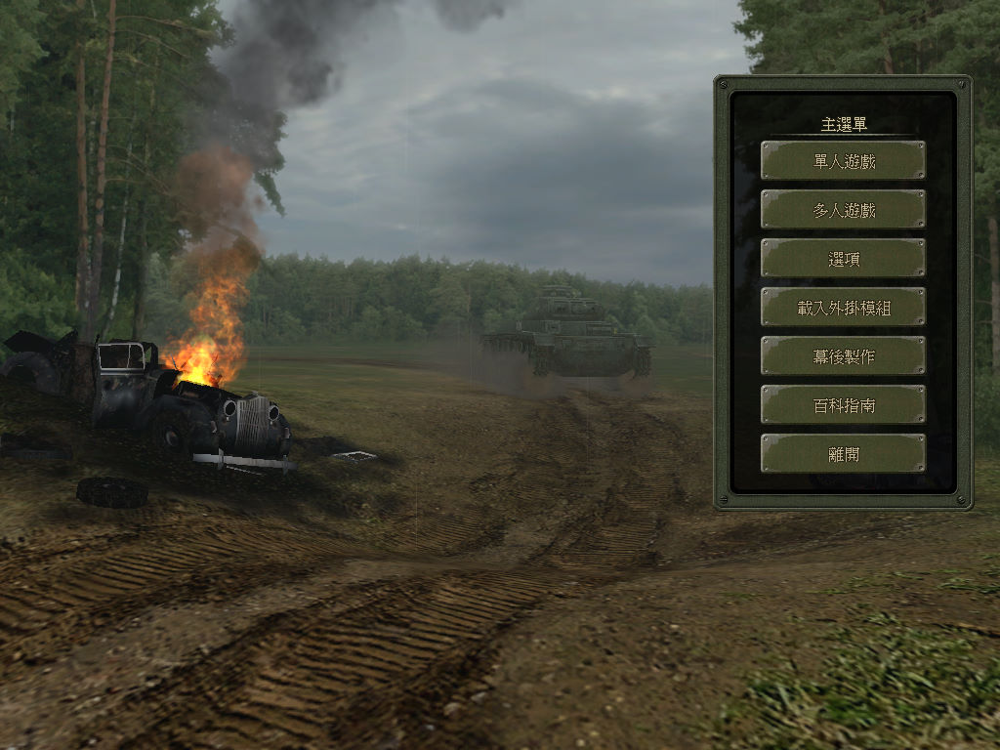
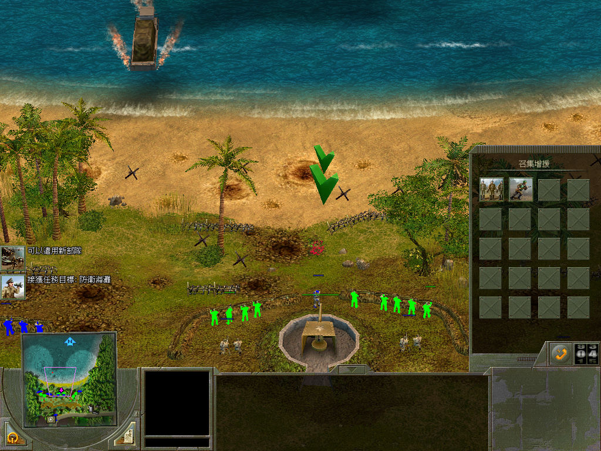

名稱：閃擊戰2／閃電戰2 (Blitzkrieg2，繁中／簡中／英文版)
簡介：Nival 2006年出品的即時戰術遊戲，由CDV代理發行。台灣由光譜繁中化並代理發行，
大陸由奧美簡中化並代理發行。2007年分別推出「帝國覆滅（Fall Of The Reich）」
和「解放（Liberation）」獨立資料片 [待補]。


保護：繁中版主程式為光碟StarForce 3.05（序號：X8P2A-89QUV-ES78K-8P6T4-HM3XG）
英文版主程式為光碟StarForce 3.07，簡中版主程式無保護（已為1.5版）
簡中版帝國覆滅資料片為光碟，解放資料片為光碟，破解碼：
Game.exe
40 00 83 F8 05
-- -- -- -- 03
85 C0 74 05 C6 44
-- -- 75 -- -- --
備註：資料片無繁中版。
檔案：bk2_patch_1_5.rar = 英文主程式1.5更新檔
nocd15.rar = 主程式1.5免光碟檔